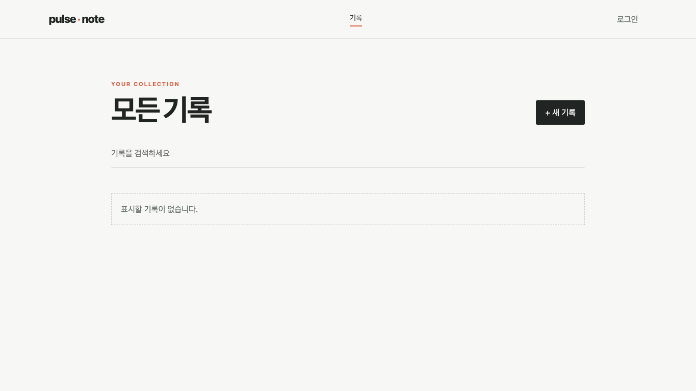
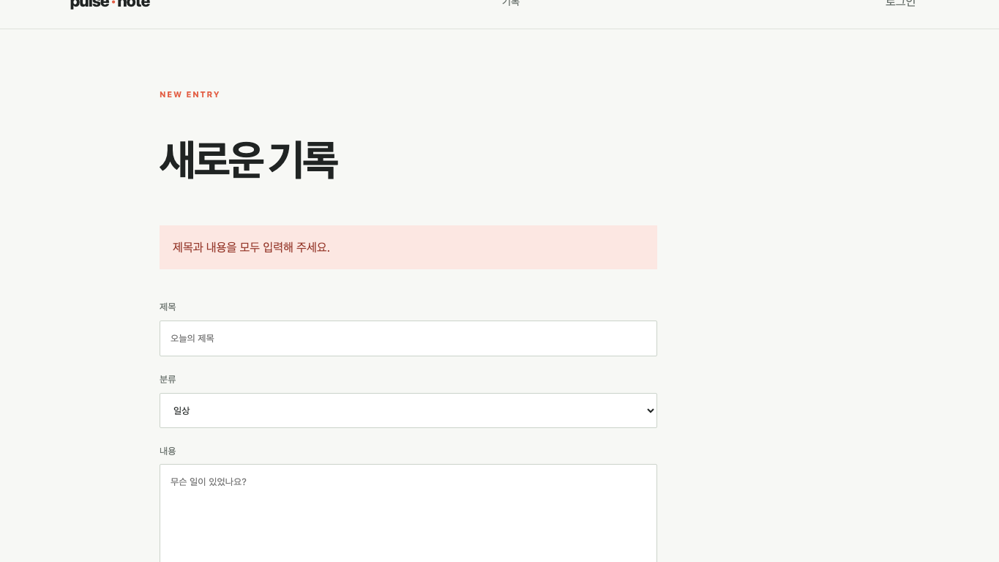
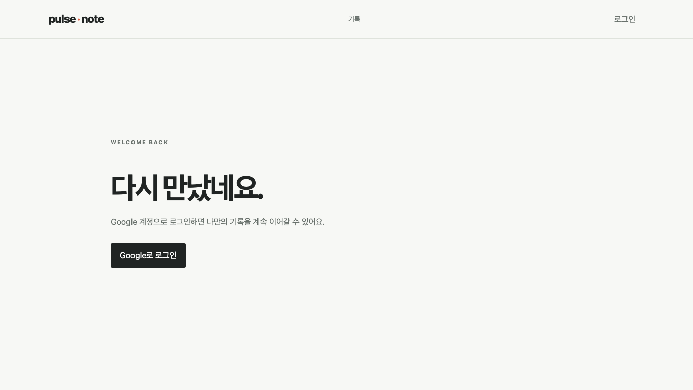
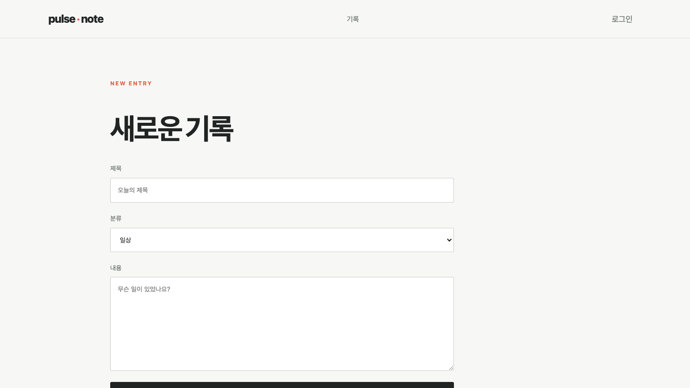

B1-2 · pulse·note
React와 Firebase로 만드는 개인 기록 서비스. 결과 화면에서 출발해 상태·설계·검증 근거를 따라갑니다.
| 시작 · 서비스와 구조 |
| Part 1 · 사용자 경험 |
| Part 2 · 구조와 React 상태 |
| Part 3 · 선택과 검증 |
시작
프로젝트 개요
- 하루의 기록을 작성하고, 목록에서 찾고, 상세에서 수정·삭제하는 React SPA입니다.
- Google 로그인과 Firestore를 사용해 사용자별 기록을 다룹니다.
- 발표는 평가 질문을 주제별로 묶되, 각 화면에서 확인할 수 있는 근거를 앞에 둡니다.
시작
서비스 구조와 데이터 흐름
- URL은 페이지 컴포넌트를 선택하고, Provider는 사용자·기록 상태를 공유합니다.
- 로그인 사용자의 기록만 Firestore에서 조회해 Store Context에 넣습니다.
- 화면은 공통 컴포넌트로 결과를 보여주며, 코드와 실행 확인은 별도 근거로 분리합니다.
URL → Routes → pages
↓
Firebase Auth → useItems → Firestore
↓ ↓
ItemsProvider → Store Context
↓
Items · Detail · FormPart 1
사용자 경험
- 라우팅과 잘못된 주소
- 목록·상세·등록·수정·삭제
- 폼 검증과 비동기 상태
Part 1
라우팅과 잘못된 주소
- 홈, 로그인, 목록, 상세, 작성, 수정, 프로필의 정상 경로 7개가 정의되어 있습니다.
- 어느 경로에도 맞지 않으면 wildcard 경로가 Not Found 페이지를 표시합니다.
- 경로 목록의 존재는 코드로 확인했고, 잘못된 주소 화면은 배포 서비스에서 직접 확인했습니다.
Part 1
기록을 관리하는 한 흐름
- 목록의 ItemCard를 누르면 id가 포함된 상세 경로로 이동합니다.
- 작성·수정은 Firestore 응답 후 items를 갱신하고, 삭제는 성공 시 목록에서 항목을 제거합니다.
- 사용자는 기존 배포 URL에서 로그인 후 목록·상세 조회와 등록·수정·삭제를 검증했습니다.

Part 1
폼 입력 검증과 실패 복구
- 제목과 내용이 비면 원격 요청 전에 제출을 중단하고 오류 문구를 보여줍니다.
- 저장 요청 중에는 버튼이 비활성화되고 문구가 ‘저장 중...’으로 바뀝니다.
- save가 성공을 반환할 때만 목록으로 이동합니다. 빈 폼 검증은 배포 화면에서 확인했습니다.

Part 1
로딩·오류·빈 상태를 구분하기
- 목록은 loadError, busy, 데이터 유무를 순서대로 검사해 한 상태만 표시합니다.
- 공통 Status 컴포넌트가 error·loading·empty의 같은 마크업을 제공합니다.
- 배포에서는 빈 상태만 직접 확인했습니다. 오류·로딩과 모든 핵심 화면의 일관성은 추가 검증이 필요합니다.
Part 2
구조와 React 상태
- 페이지·컴포넌트·훅의 책임
- 커스텀 훅의 실제 경계
- 상태 변경과 리렌더링
Part 2
페이지와 재사용 컴포넌트
- pages는 주소별 화면, components는 반복 UI, hooks/lib는 데이터 접근과 서비스 연결을 맡습니다.
- components에는 Button, Status, ItemCard 등 9개 파일이 있습니다. 파일 수만으로 재사용을 증명하지는 않습니다.
- 같은 Status가 목록과 폼에서 쓰이는 경로를 실제 코드로 확인할 수 있습니다.
pages/ Home · Items · Detail · Form · Login · Profile · NotFound components/ Button · Status · ItemCard · ItemList · FormField · ... hooks/ useItems lib/ Store · Auth · firebase
Part 2
커스텀 훅의 실제 경계
- useItems가 사용자별 Firestore 조회와 등록·수정·삭제를 담당합니다.
- 목록·로딩·오류 상태도 훅에서 갱신하고 ItemsProvider가 Context로 세 페이지에 공유합니다.
- 목록 화면은 상태를 표시하고 데이터 요청은 훅이 맡아 평가 기준의 데이터 흐름 분리를 충족합니다.
Auth Context → useItems() → Firestore
↓ items · busy · error · CRUD
ItemsProvider → Store Context
↓
Items · Detail · FormPart 2
상태가 화면을 바꾸는 세 지점
- 폼: setForm이 입력 값을 바꾸고 controlled input의 value가 다시 표시됩니다.
- 검색: setQ가 filtered를 다시 계산해 목록 또는 빈 결과를 선택합니다.
- 조회: user 변경으로 effect가 실행되고 setItems가 목록·상세에 새 데이터를 제공합니다.
입력 이벤트 → setForm → input value 검색 이벤트 → setQ → ItemList / empty 인증 변화 → useEffect → setItems → 화면
Part 3
선택과 검증
- Firebase 연동과 인증
- 배포 확인 범위
- 남은 평가 질문
Part 3
Firebase 연동과 인증
- Firebase Authentication의 Google 로그인을 사용하고 Firestore에 기록을 저장합니다.
- Provider 조회에는 user.uid 필터가 들어 있어 화면 데이터 흐름은 사용자 기준으로 나뉩니다.
- Firebase를 선택한 개인적 이유와 연동 중 실제 겪은 어려움은 코드만으로 알 수 없어 발표자 설명이 필요합니다.

Part 3
배포에서 확인한 것과 못 한 것
- 공개 서비스의 홈, 목록의 빈 상태, 작성 폼, 필수값 오류, 로그인, Not Found 화면을 확인했습니다.
- 사용자가 기존 배포에서 원격 목록·상세 조회와 CRUD 전체 동작을 검증했습니다.
- 이번 로컬 훅 리팩터링이 반영된 배포본은 아직 확인 전이므로 재배포 뒤 같은 흐름을 다시 확인해야 합니다.

마무리
남은 검증과 발표자 답변
- 로그인 후 배포 환경의 목록·상세·등록·수정·삭제 동작은 사용자가 검증했습니다.
- 조회·변경 흐름은 useItems로 분리하고 ItemsProvider를 통해 페이지에 공유합니다.
- Firebase를 선택한 이유와 연동 중 실제 겪은 어려움은 발표자가 자신의 경험으로 설명해야 합니다.
- 체크리스트는 내부 커버리지 기준이며, 발표 화면은 사용자 행동과 증거를 중심으로 보여줍니다.
구현 완료 useItems의 조회 · CRUD · 상태 관리 실행 검증 완료 로그인 후 배포 CRUD · 사용자 확인 발표자 답변 Firebase 선택 이유 · 실제 어려움